「凸优化」 凸集

凸集合
凸集
- 仿射集合
- 凸集
- 重要案例
- 保凸运算
- ⼴义不等式
- 分离与⽀撑超平⾯
- 对偶锥与⼴义不等式
仿射集合
直线方程
Def（直线方程）\(x = \theta x_1 + (1-\theta)x_2\quad(\theta\in \R)\), equivelant to: \(x = x_2+\theta(x_1-x_2)\)
线段：\(\theta \in [0,1]\)
仿射集合的定义
Def（仿射集合）任意两个点的直线仍然在该集合中。即：经过 \(x_1\) 和 \(x_2\) 的直线所有点：\(x=\theta x_1 + (1-\theta)x_2,~\theta \in \R\)
如果通过集合 \(C\) 中的任意两个不同点的直线仍在集合 \(C\) 中，那么称 \(C\) 是仿射的。
仿射组合
Def：（仿射组合）特殊的线性组合\(\theta_1+\dots+\theta_k=1,~\theta_1x1+\dots+\theta_kx_k\)
- 仿射集合的扩展定义：
- 包含集合中任意点的仿射组合的集合
子空间
仿射集合 C 内： \(x_1\) 和 \(x_2\) 则 \(\theta x_1 + (1-\theta)x_2\in C\) Def（子空间）\(V=C-x_0=\{x-x_0|x\in C\}\)：与C相关的子空间
- 子空间对于\(\alpha x_1 +\beta x_2\) 中的\(\alpha\)，\(\beta\)没有约束
- 经过 \(0\)
- 线性代数中子空间的定义 设W为数域F上的n维线性空间V的子集合（即W∈V），若W中的元素满足
- 对加法是封闭
- 对数乘也是封闭
- 包含 0
- 构造方法： \(\alpha(v_1+x_0) + \beta(v_2+x_0) + (1-\alpha - \beta) x_0\in C\)
- 任何仿射集合都可以表示为一个线性方程组的解集
线性方程组与仿射集合
Review: \(C=\{x|Ax=b\}\)
线性方程组的解集是仿射集合
仿射集合可以表示为一个线性方程组的解集
利用定义证明
当然，它的子空间就是：\(V = \{x|Ax = 0\}\)
仿射包
- 任意集合\(C\)，构造尽可能小的仿射集
- 仿射包：\(\mathrm{aff}~C=\{\theta_1x_1+\dots+\theta_kx_k|x_1, ...,x_k\in C\}\)
仿射维度与相对内部
- 相对内部：\(\mathrm{relint}~C=\{x\in C|B(x,r)\cap \mathrm{aff} C\subseteq C,~for~some~r>0\}\)
凸集
- 连接 \(x_1\) 和 \(x_2\) 的线段上所有的点 \(x = \theta x_1 + (1-\theta)x_2,\quad 0\le \theta \le 1\) 仍然在集合中
凸组合和凸包
- 点 \(x_1,\dots,x_k\) 的凸组合是满足以下形式的点：
- \(x = \sum\theta_i x_i,~\sum \theta_i=1\)
Def（凸包） \(\mathrm{conv}~S\) S中所有点的凸组合的集合
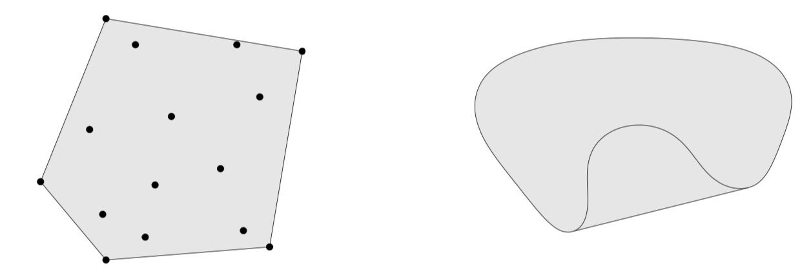
锥
- 定义：\(\forall x \in C\wedge \theta\ge 0, \theta x \in C\)
- 锥组合（非负线性组合）：\(x = \theta_1 x_1+\theta_2 x_2\)
- 锥包：集合中所有元素的锥组合的集合
- \(\{\theta_1x_1+\cdots+\theta_kx_k|x_i\in C, \theta_i\ge 0, i = 0, 1\dots,k\}\)
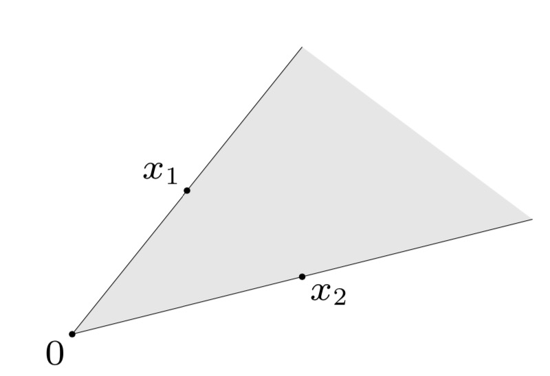
对比
| 组合 | 集合 | 类比 | |
|---|---|---|---|
| 仿射组合 | \(\sum \theta_i = 1\) | 仿射集 | 直线 |
| 凸组合 | \(\sum \theta_i = 1, \theta_i \ge 0\) | 凸集 | 线段 |
| 锥组合 | \(\theta_k\ge 0\) | 凸锥集 | 射线 |
- 仿射集合是凸的
- 考虑单点集：\(C = \{x\}\)
- 仿射、凸
重要的凸集
- \(R^n\)空间：仿射、凸、锥
- \(R^n\)的子空间：仿射、凸的
- 直线：仿射 可能凸
- 线段 可能是
- 射线 可能是
超平面和半空间
Def（超平面）\(\{x|a^Tx=b\}\quad(a\ne 0)\)
- 仿射集合、凸集
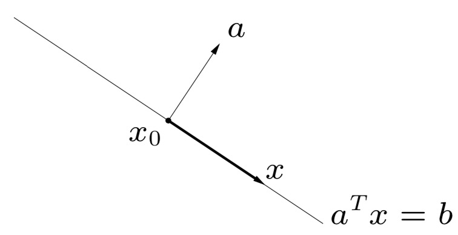
Def（半空间）\(\{x|a^Tx\le b\}\quad(a\ne 0)\)
- 凸集
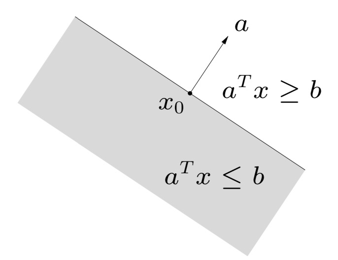
注意证明方法：利用线性方程组
球和椭球
Def（Euclid 球）\(B(x_c,r) = \{x|~\|x-x_c\|_2\le r\}\)
- 凸集
- 注意：所有通过距离定义，满足三角不等式，都构成凸集
Def（椭球）\(\{x|(x-x_c)^TP^{-1}(x-x_c) \le 1\}\)
- 其中 \(P\) 为对称正定矩阵
- 其他表示：\(\{x_c+Au|||u||_2\le1\}\) A 非奇异
范数球和范数锥
Def（范数）
范数满足
- \(\|x\|\ge 0;\|x\|=0~iff~x=0\)
- \(\|tx\|=|t|\|x\|\forall t\)
- \(\|x+y\|\le \|x\|+\|y\|\)
- 范数球：\(\{x|~\|x-x_c\|\le r\}\)
- 范数锥：\(\{(x,t)|~\|x\|\le t\}\)
例如：
- 一阶范数：\(\sum|x_i|\)
- 二阶范数：\(\sqrt{\sum x_i^2}\)
Def（范数球）\(x_c\) 为球心，\(r\) 为半径。
Def（范数锥）\(\{(x,t)|\|x\|\le t\}\)
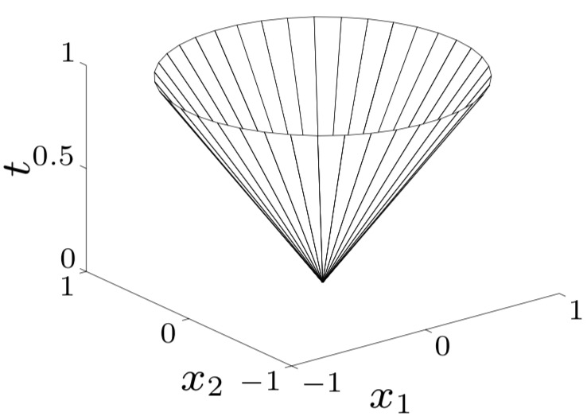
多面体
Def（多面体）有限个线性等式和不等式的解集：\(Ax\preceq b,\quad Cx = d\)
考虑仅由不等式组成的情况。
有限个半空间和超平面的交集
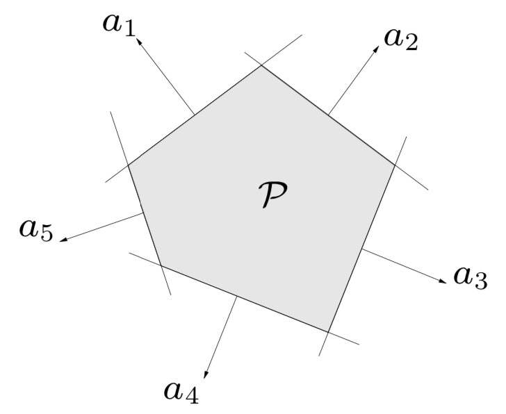
单纯形
Def（单纯形）\(C=\mathrm{conv}\{v_0,\dots,v_k\}=\{\sum \theta_i v_i|0\preceq \theta,~1^T\theta =1\}\)
求解线性规划问题：单纯形法 解析
- 常见的单纯形：单位单纯形、概率单纯形
半正定锥
- \(\mathbf{S}^n\)：对称矩阵集合
- \(\mathbf{S}^n_+= \{X\in\mathbf{S}^n|X\succeq 0\}\)：半正定\(\lambda_i\ge 0\)
- \(\mathbf{S}^n_{++}=\{X\in\mathbf{S}^n|X\succ 0\}\)：正定 \(\lambda_i > 0\)
n = 2 时：
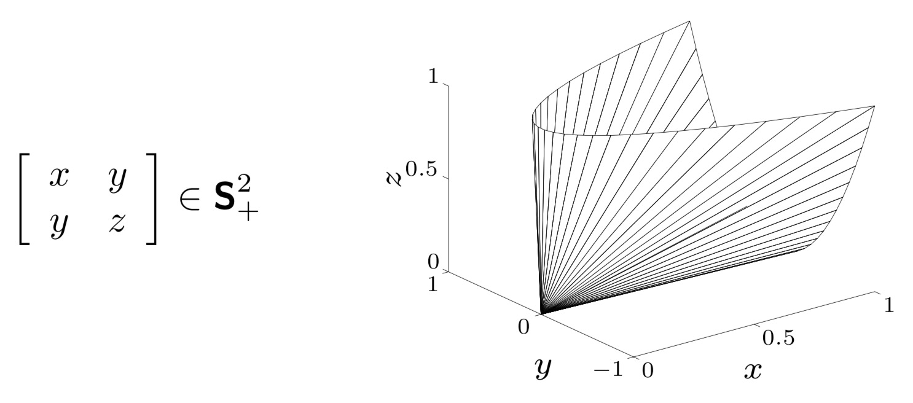
保凸运算
如何确定凸集：
- 定义 \(\forall x_1,x_2\in C,0\le \theta\le 1\Rightarrow \theta x_1+(1-\theta)x_2\in C\)
- 保凸运算： 交集、仿射函数、透视函数、线性分式
交集
Thm：任意数目凸集的交集为凸集
- 包括无穷
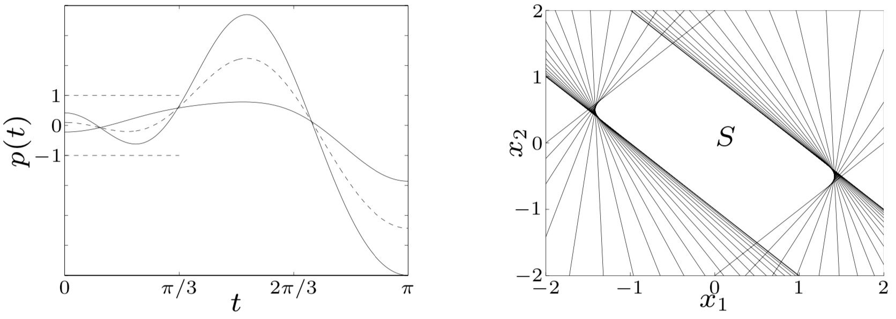
仿射函数
- \(f(x) = Ax+b\) 其中 \(A\in \R^{m\times n},b\in \R^m\)
- 凸集在仿射函数下变为凸集
- 凸集在仿射函数下的原象为凸集
例如：
- 缩放、平移、投影
- 椭球是球的仿射映射
透视函数
Def（透视函数）
- \(P:\R^{n+1}\rightarrow \R^n\)
- \(P(x,t) = x/t,\quad\mathbf{dom} P = \{(x,t)|t>0\}\)
- 注意输入输出维度变化
- 凸集在透视函数下的象和原象为凸集
线性分式函数（投射函数）
- \(\displaystyle{f(x) = \frac{Ax+b}{c^Tx+d},~where~\mathbf{dom}~f=\{x|c^Tx+d>0\}}\)
- 仿射函数和透视函数的复合函数 \(f = P\circ g\)
\[ g(x) = \left[\begin{matrix}A\\c^T \end{matrix}\right] x + \left[\begin{matrix} b\\d \end{matrix}\right] \]
- 凸集在线性分式下的象和原象都是凸集。
例如：
- 条件概率
又如：
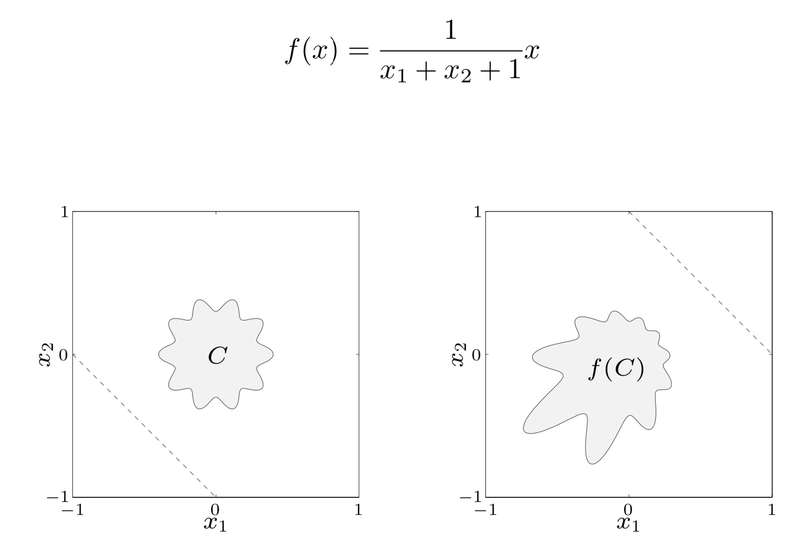
广义不等式
建立向量的不等关系
Def（正常锥）
- \(K\)是闭的（包含边界）
- \(K\)是实的（没有空的内部）
- \(K\)是尖的（不包含直线）
例如：
- 非负象限\(K = R^n=\{x\in \R^n|x_i\ge 0,~i=1,\dots,n\}\)
- 半正定锥
广义不等式定义
- Def：\(x\preceq_Ky\iff y-x\in K\,\)
- \(~x\prec_K y\iff y-x\in \mathbf{int}~K\)
- 例如：
- 分量不等式：\(x\prec_{\R^n_+} y\iff x_i\le y_i,~i = 1,...,n\)
- 矩阵不等式：\(X\preceq_{\mathrm S^n_+}Y\iff Y-X为半正定\)
- 偏序、但不满足线序
最小、极小元
- 最小元：\(y\in S\Rightarrow x\preceq_Ky\)
- 极小元：\(y\in S,~y\preceq_K x\Rightarrow y = x\)
例如：\(x_1\) 为 \(S_1\) 最小元，\(x_2\) 为 \(S_2\) 极小元
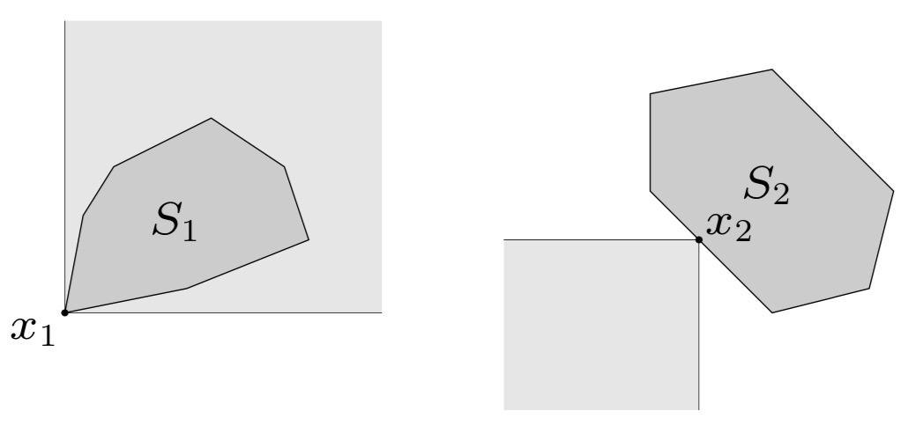
超平面分离定理
若C和D时两个不相交的凸集，则存在：
\(a\ne 0, a^Tx \le b~for~x\in C,~~a^Tx\ge b~for~x\in D\)
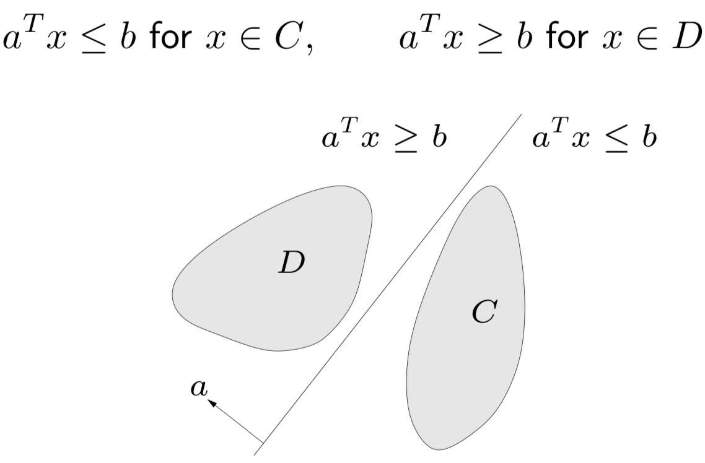
支撑超平面
Def（支撑超平面）\(\forall x\in C,a^Tx\le a^Tx_0 \rightarrow \{x|a^Tx=a^Tx_0\}\)
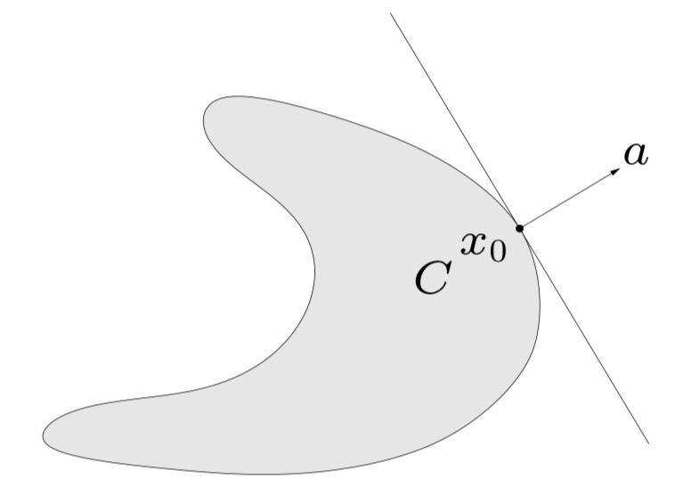
Thm（支撑超平面存在定理）：若集合 \(C\) 为凸集，则在集合 \(C\) 的每一个边界点处都存在一个支撑超平面。
对偶锥和广义不等式
- \(K\) 的对偶锥：\(K^*=\{y|y^Tx\ge 0,\forall x \in K\}\)
- \((K^*)^* = K\)
Thm：正常锥的对偶锥为正常锥，可以定义广义不等式： \[ y\succeq_{K^*}0\iff y^Tx\ge 0\forall x\succeq_{K^*}0 \]
对偶不等式的最小和极小元
Def（最小元）\(x\) 为集合 \(S\) 的最小元，当且仅当 \(\forall \lambda \succ_{K^*}0\)，\(x\) 为集合 \(S\) 中元素 \(z\) 上极小化 \(\lambda^T z\) 的唯一最优解
Def（极小元）对于某些 \(\lambda \succ_{K^*}0\)，\(x\) 在集合 \(S\) 中元素 \(z\) 上极小化 \(\lambda^Tz\)，则 \(x\) 为极小元。